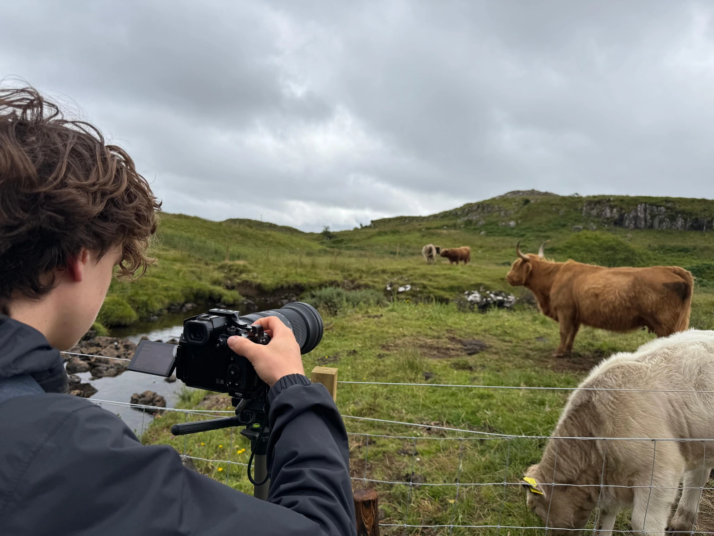
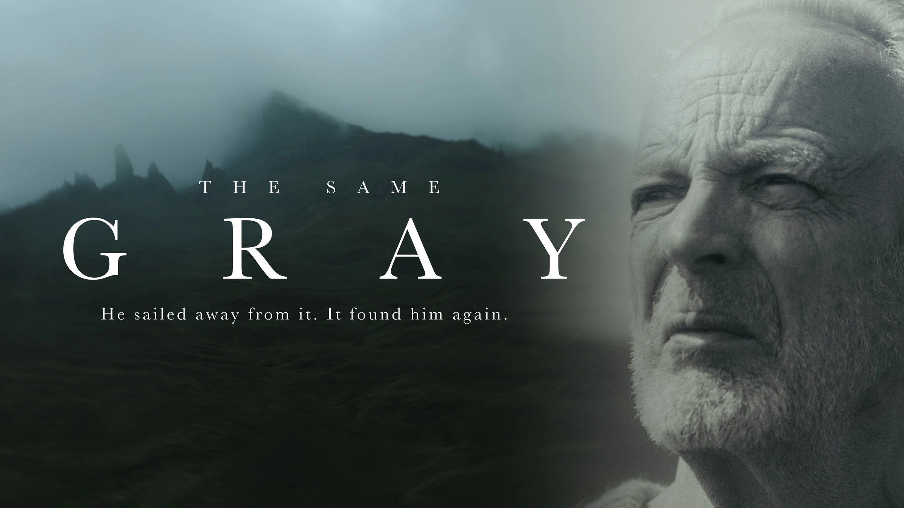
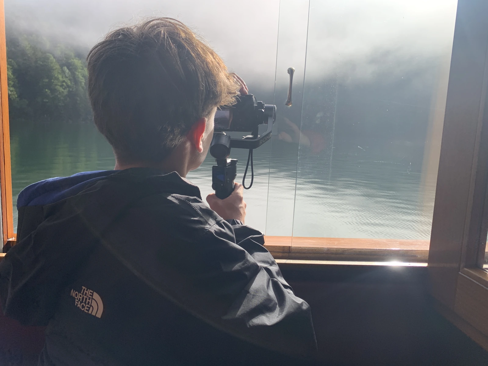
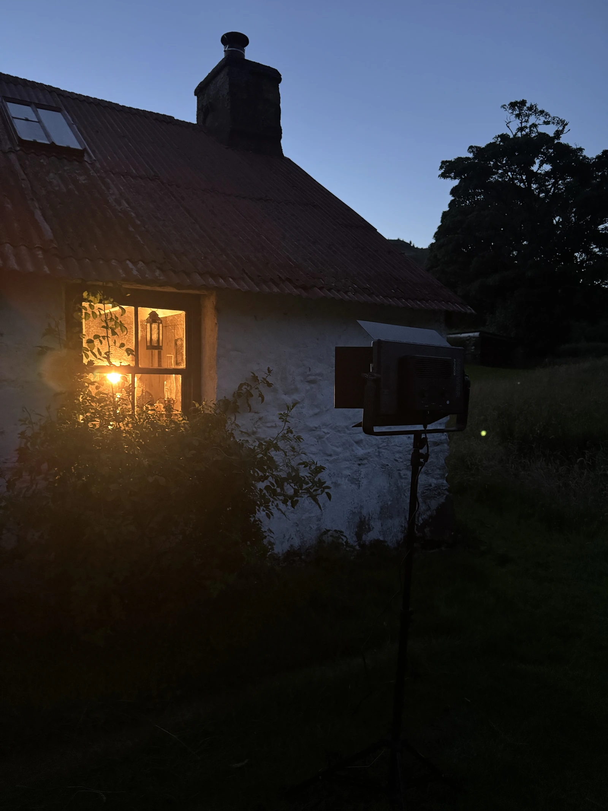

Film, der mehr zeigt als nur Bilder
Ich produziere keine typischen Werbevideos – ich erzähle Geschichten, die man fühlen kann.
Meine Filme fangen Stimmungen ein, transportieren Atmosphäre und lassen Orte, Marken und Menschen lebendig wirken. Es geht nicht nur darum, was man sieht, sondern darum, was man dabei spürt.


Wer ich bin
Ich bin Luis, 16 Jahre alt und Videoproduzent aus Hamburg. Was als Hobby mit einer Drohne begonnen hat, ist heute zu einer echten Leidenschaft geworden.
Ich produziere Werbe- und Imagefilme für Unternehmen und Selbstständige – mit professionellem Look, durchdachtem Schnitt und einem Gespür für gute Bilder. Ich habe bereits Videos für lokale Firmen, Produktreels für Designer und cinematische Kurzfilme umgesetzt – alles mit dem Anspruch, dass es auch auf den großen Plattformen bestehen kann.
Ich glaube an ehrliche Bilder, präzises Storytelling und daran, dass visuelle Inhalte Emotionen und Vertrauen schaffen können. Wenn du ein Video willst, das auffällt – melde dich gern bei mir.
Jede Geschichte verdient es, gut erzählt zu werden.

Projekte
Meine Arbeitsweise
Am Ende erinnern sich die meisten nicht daran, was genau gesagt wurde, sondern wie sich ein Video angefühlt hat.
Deswegen steht bei mir von Anfang an die Stimmung im Mittelpunkt. Bevor ich irgendetwas drehe, suche ich zusammen mit dem Kunden die Musik aus. Der Track legt die emotionale Richtung fest – er ist die Weichenstellung für das gesamte Projekt und beeinflusst später Schnitt, Bildsprache und Tempo des Films.
Wenn Idee und Musik zusammenpassen, plane ich den Film in Milanote: Ich halte Ablauf, Farbwelt, Stimmung der Szenen, mögliche Locations und Referenzen fest – alles an einem Ort, auf Wunsch auch für den Kunden einsehbar. Parallel dazu arbeite ich im Schnittprogramm weiter, lege die Musik an und baue einen groben Ablauf mit Platzhaltern.
Die Aufnahmen werden später gezielt um die Musik herum geplant, statt den Song im Nachhinein passend zu schneiden. So entsteht ein Film, der rhythmisch und emotional wie aus einem Guss wirkt – und der Dreh bleibt effizient, ohne viele Reshoots.
Zuerst die Musik, dann die erste Aufnahme.

Mein Equipment
Gute Bilder entstehen nicht zufällig – sie brauchen Kontrolle über Licht, Bewegung und Ton.
Ich filme mit der Lumix S5 II für einen sauberen, cineastischen Look und präzise Farben. Dazu setze ich lichtstarke Optiken ein, die vom weiten Überblick bis zur feinen Detailaufnahme alles abdecken. Ruhige Kamerafahrten und gezielt gesetztes Licht sorgen für Atmosphäre und ein hochwertiges Erscheinungsbild; der Ton wird genauso sorgfältig aufgenommen, damit Aussagen klar und nah klingen.
Wenn es die Geschichte verlangt, ergänze ich das durch Drohnenaufnahmen mit der DJI Mavic 3 Classic – für weite Establishing-Shots und fließende Übergänge von oben. Am Ende liefere ich flexibel nach Wunsch: in 24, 25 oder 30 fps und in HD, 4K oder 5K – oder genau in der Auflösung und Framerate, die benötigt wird.